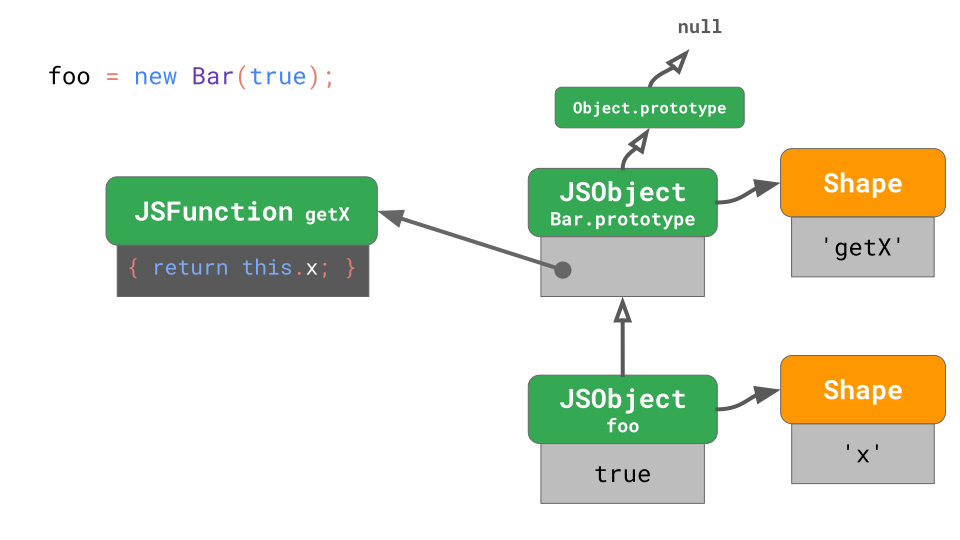
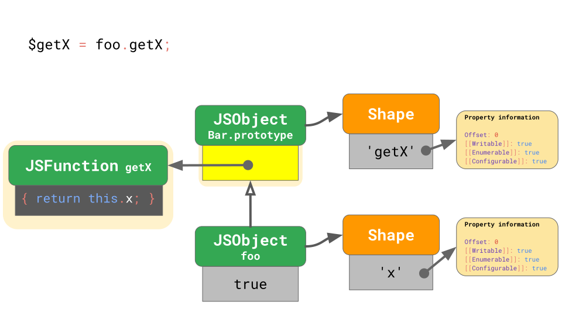

前言
本文是根据自己的理解翻译而来，如有疑惑可查看原文 JavaScript engine fundamentals: optimizing prototypes。
本次暂定翻译三篇文章：
- JavaScript engine fundamentals: Shapes and Inline Caches(Published 14th June 2018)
- JavaScript engine fundamentals: optimizing prototypes(Published 16th August 2018)
- The story of a V8 performance cliff in React(Published 28 August 2019)
Optimization tiers and execution trade-offs
上一篇文章已经讨论了现代 JavaScript 引擎的工作流程：

我们也指出了引擎间的相同之处和编译环节中的差异。为什么会这样？为什么一些引擎的编译器比其他引擎多？结论是基于更快地生成代码和生成更好的代码两者间的考量。

解释器可以很快地生成字节码，但是字节码的效率不高。另一方面，优化编译器虽然会稍微花费些时间，却可以生成效率更高的机器码。
下图是 V8 模型，V8 的解释器称为 Ignition，是所有引擎中最快的解释器（从原始字节码执行速度的角度）。V8 的优化编译器称为 TurboFan，它最终会生成高度优化的机器码。

启动速度和执行速度是一些 JavaScript 引擎选择添加优化层的理由。比如，SpiderMonkey 就在解释器和 IonMonkey 编译器间添加了 Baseline 层。

解释器可以快速生成字节码，但是字节码执行的速度比较慢。Baseline 会花些时间生成代码，但同样会提供性能更好的代码。最后，IonMonkey 会花更长的时间去生成机器码，并能够更高效地执行。
来用一个具体的例子，看看不同引擎之间的处理差异。在这个循环里，一些代码重复执行。
1 | let result = 0; |
在 Ignition 解释器中，V8 开始执行字节码。在某个时刻引擎测定代码是 hot 的，就会启动 TurboFan frontend, TurboFan frontend 是负责整合分析数据（profiling data）并构建代码的初级机器码表现形式。这些东西会被送到处在其他线程的 TurboFan 优化程序中作进一步优化。

当优化程序进行时，V8 继续执行字节码。在某个时刻，优化程序生成可执行代码后，流程会接着执行下去。
同样，SpiderMonkey 也是在解释器中开始执行字节码。但是它有 Baseline 层，hot 代码会被送到这里。一旦 Baseline 编译器生成了 Baseline 代码，流程会接着执行下去。

Baseline 代码运行一段时间后，SpiderMonkey 最终会启动 IonMonkey frontend 和 优化程序（类似于 V8）。IonMonkey 在优化时，Baseline 也会保持着运行状态。当优化完成后，已优化的代码将取代 Baseline 代码被执行。
Chakra 的架构和 SpiderMonkey 很相似。Chakra 尝试并行做很多事情同时又不会阻塞主线程。Chakra 会将字节码和编译器可能需要的分析数据复制出来，并发往编译器专用进程。

当代码准备妥当后，引擎开始执行 SimpleJIT 代码。这种方式的好处在于复制所停留的时间远远小于编译器（ 编译器 frontend）所用的时间。缺点就是，这种启发式复制（copy heuristic）会使得某种优化所必须的信息丢失，因此这是在用代码质量换取时间。
在 JavaScriptCore，所有的优化编译器和主线程并发运行；主线程只是触发了另一个线程的编译任务。然后编译器通过复杂的加锁从主线程获取分析数据（profiling data）。

这种方式的优点是减少了因 JavaScript 优化引发的麻烦。缺点就是需要处理复杂的多线程问题和各种操作所带来的加锁成本。
我们讨论了快速生成代码，也讨论了生成快速的代码。但是，还要有一点需要注意：内存的使用！为了解释这个，这里有个两数字相加的例子。
1 | function add(x, y) { |
以下是 V8 的 Ignition 编译器生成的字节码：
1 | StackCheck |
不要在意字节码的细节，重点是知道它只有 4 个指令！
当代码编程 hot 时，TurboFan 会生成以下高度优化过的机器码：
1 | leaq rcx,[rip+0x0] |
和字节码相比较，这里的代码会显得很多！通常来说，字节码会比机器码紧凑得多，尤其对比高度优化过的机器码。另一方面，字节码需要解释器来运行，而优化过的代码则可以被处理器直接执行。
这是 JavaScript 引擎不「优化一切」的原因之一（仅优化 「hot function」）。正如我们早先看到的，生成优化过的机器码会用很长的时间，除此之外，我们刚才也知道了优化过的机器码会占用用更多的内存空间。
Optimizing prototype property access
先前的文章阐述了 JavaScript 引擎使用 Shapes 和 Inline Caches 优化对象属性的访问。再次说明，引擎将对象的 Shape 和对象的值分开存储。

结合 Shapes 和 Inline Caches 可以加快代码中同一位置的属性重复性访问。

Classes and prototype-based programming
我们已经知道了如何快速访问 JavaScript 对象上的属性，我们再看看 JavaScript 最近新增的特性：类。下面是 JavaScript 中类的语法：
1 | class Bar { |
看似是个新概念，其实就是基于原型的语法糖。
1 | function Bar(x) { |
在这里，我们给 Bar.prototype 这个对象添加属性 getX，这和其它普通对象添加属性没有区别，因为在 JavaScript中， 原型也是个对象！像 JavaScript 这种基于原型的编程语言，方法可以通过原型共享，而字段则存储在实例中。
让我们看看通过 Bar 创建实例 foo 会发生什么？
1 | const foo = new Bar(true); |
创建出来的实例（foo）拥有一个只包含属性 'x' 的 shape。foo 的原型指向 Bar.prototype。

Bar.prototype 也有属于自己的 shape，它包含一个 getX 属性，这个属性的值是个返回 this.x 的函数（getX）。Bar.prototype 的原型是 Object.prototype。Object.prototype 是原型链的根源，因此它的原型是 null。

如果你用同一个类又创建了一个实例，那么这两个实例将共享 shape，两个实例也会指向同一个 Bar.prototype。
Prototype property access
ok，我们已经知道了定义一个类并用类创建实例的过程。那么，如果我们在实例上调用一个方法，又会发生什么呢？
1 | class Bar { |
你可以认为方法的调用分为两个步骤：
1 | const x = foo.getX(); |
步骤 1：加载方法，这个方法只不过是原型上的属性（而它恰好是个函数）。步骤 2：用实例去调用这个方法（重新绑定 this）。先看步骤 1：

开始时，引擎从实例 foo 上查找并发现 foo 的 shape 上没有 getX 属性，于是它不得不沿着原型链向上查找。到达 Bar.prototype 后，开始查找它的 shape 并找到了 getX 属性。然后根据 getX 的属性信息（Offset：0）在 Bar.prototype 上找到了 getX 函数。
JavaScript 的灵活性使得原型链可能会突变，例如：
1 | const foo = new Bar(true); |
这个例子中，foo.getX() 被调用了两次，但是每次都会有不同的含义，不同的结果。所以说，尽管原型在 JavaScript 中只是个对象，但是提升原型属性的访问速度依然比常规对象更具有挑战性。
通常情况下，原型属性的加载是个非常频繁的操作：每次方法调用都会去加载属性！
1 | class Bar { |
之前，我们讨论了使用 Shapes 和 ICs 优化常规对象的属性访问。那么，我们能否使用相同的策略去优化原型属性的重复性访问呢？下面，我们看看属性是如何加载的。

在这个案例中，为了提高重复加载的速度，我们需要知道三件事：
- foo 的 shape 不包含
getX且没有改变过。这意味着 foo 没有添加、删除属性，或改变属性特性。 - foo 的原型依然是
Bar.prototype。这意味着，foo 的原型没有通过Object.setPrototypeOf()或__proto__的方式改变过。 Bar.prototype的 shape 包含getX且没有改变过。这意味着Bar.prototype没有添加、删除属性，或改变属性特性。
一般情况下，这意味着我们需要检查 1 遍实例本身，还有因每增加一个原型就就要增加的 2 遍检查直到找到我们想要的属性。1+2N（N 表示原型链上直到找到存在属性的原型的原型数量） 遍的检查看上去还不是特别糟糕，因为这时的原型链还比较短 —— 但是引擎会经常处理有着很长原型链的对象，就比如常见的 DOM 类。
1 | const anchor = document.createElement('a'); |
现有个 HTMLAnchorElement 并调用 getAttribute() 方法。这简单的 anchor 元素涉及到 6 个原型！getAttribute() 不是 HTMLAnchorElement 原型上的方法，而是原型链上靠近顶部的原型上。

getAttribute() 是在 Element.prototype 上发现的。这意味着我们每次调用 anchor.getAttribute() 时，都需要做以下这些事：
- 检测到
getAttribute不存在于anchor对象本身; - 检测到
anchor的原型是HTMLAnchorElement.prototype; - 确认没有
getAttribute属性； - 检测到下一个原型是
HTMLElement.prototype; - 确认没有
getAttribute属性； - 继续检测下一个原型
Element.prototype; - 找到
getAttribute。
一共需要 7 次检测！而这种情况很常见，于是引擎想方设法去减少属性（原型上）加载时的检查次数。
回到更早的例子，当我们从 foo 访问 getX 时，共做了 3 次检查：
1 | class Bar { |
在查找属性的过程中，每个牵涉到的原型都需要做缺失检查（确认属性是否存在）。如果我们能够在属性确认的步骤里同时检测原型链，那将会减少总的检查次数。引擎也正是这么做的：

每个 shape 都指向了原型，这意味着 foo 的原型改变时，引擎会自动过渡到新的 shape。现在我们只需要检查对象的 shape 就可以同时检测属性是否存在以及原型链的导向。
鉴于此，由于检查的次数从 1+2N 降低到 1+N，所以原型上属性的访问速度也变快了。由于在原型链上查找属性的时间复杂度是线性的，所以依然还是很耗时的。引擎使用了不同的方法让检查的次数趋于常量，尤其是同一属性的连续加载（访问）。
Validity cells
为此，V8 特别处理了原型的 shapes。每个原型都有一个独一无二的 shape，这个 shape 不会被其它的对象共享（特别是其它的原型对象），每一个原型的 shape 都有与之关联的 ValidityCell。

如果与之关联的原型被修改，或该原型的上游（原型的原型，原型的原型的原型……）被修改，ValidityCell 都会被标记为无效。让我们看看这是到底怎么一回事？
为了加快原型上后续的属性加载，V8 使用 ICs 保存着 4 个字段：

代码第一次执行时，ICs 开始工作了，它要缓存属性在原型上的偏移量 「Offset」，属性所在的原型 「Prototype」（本例中的 Bar.prototype），实例的 shape 「Shape」（本例中 foo 的 shape）,还有就是与原型的 shape 相关联的 ValidityCell 「ValidityCell」，这个原型是实例 shape 直接链接的那个原型（本例中的 Bar.prototype）。
若在下一次 ICs 命中时，引擎会检查 shape （实例的 shape）和 ValidityCell。如果还有效，引擎会直接从 ICs 中提取信息，根据 Prototype 和 Offset 字段获取属性信息，这样就跳过了之前繁琐的查找步骤。

当原型发生改变时，一个新的 shape 将会生成，同时先前的 ValidityCell 将会失效。因此在下次执行时，ICs 将不会起作用，性能自然不会好。
回过头来再看看之前的 DOM，例如，Object.prototype 发生变化后，影响的将不仅仅是自身，还包括链的下游 EventTarget.prototype、Node.prototype、Element.prototype，直到 HTMLAnchorElement.prototype。
事实上，当你在代码中修改了 Object.prototype，就意味着将性能弃之不顾。所以，不要那样做！
让我们看一个具体的例子，有一个 Bar 类，它有 loadX 方法。我们将使用类的实例调用 loadX 若干次。
1 | class Bar { /* … */ } |
此时，ICs 中会记录调用 loadX 后的相关信息。然后我们修改了 Object.prototype —— 所有原型的根源 —— ValidityCell 会被标记为无效的，ICs 不会在下次执行时命中，性能也会变得糟糕。
改变 Object.prototype 是一个不好的行为，它使得原型链下游所有的 ICs 失去作用。这有另一个不推荐的行为。
1 | Object.prototype.foo = function() { /* … */ }; |
我们拓展了 Object.prototype，它使得原型链下游的所有 ICs 失效。然后调用原型上的新方法，引擎便从头开始为原型属性的访问构建新的 ICs。最后，我们删除了之前添加的方法。
清除，听着挺不错的，其实在这种情况下，只会更糟。删除 Object.prototype 上的属性就意味着修改 Object.prototype，所有的 ISc 将再一次失效，引擎也将会再一次地重头开始构建 ICs。
Take-aways
我们知道了 JavaScript 引擎是如何存储对象和类的，也知道了 Shapes、Inline Caches 和 ValidityCells 是如何帮助优化原型操作的。基于这些知识点，我们可以使用一些 JavaScript 编程技巧来提升性能：不要乱动原型（如果你真的，真的需要这么干，那么，至少要在代码运行前）。